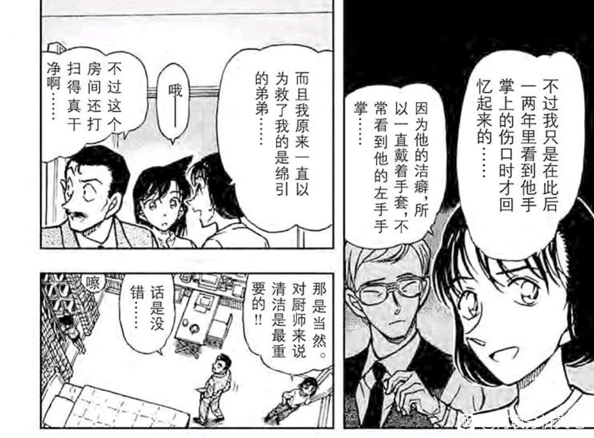
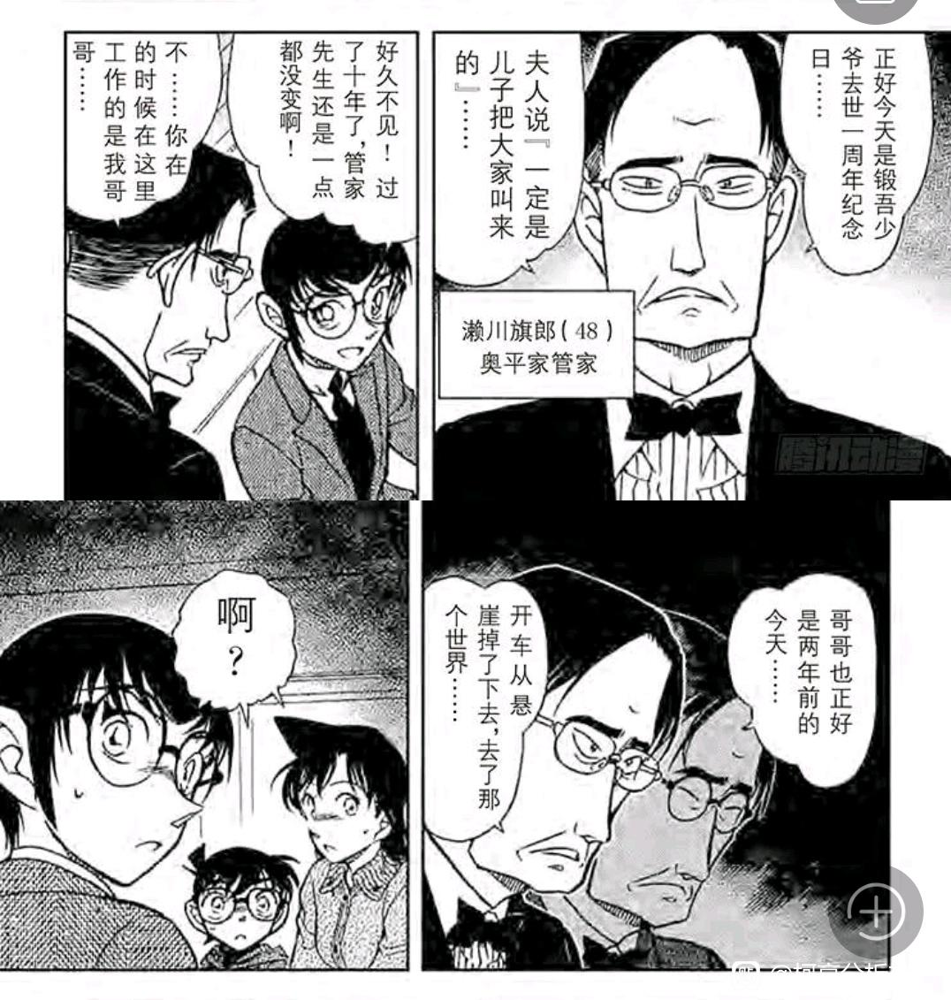
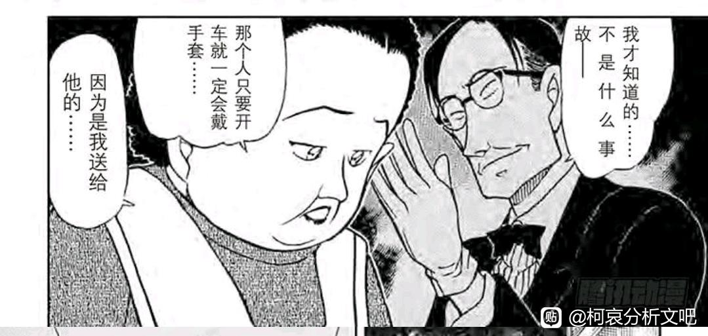
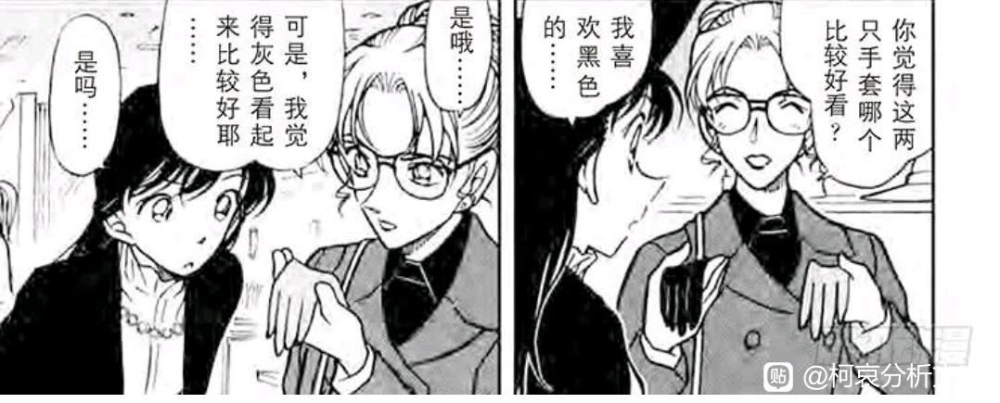
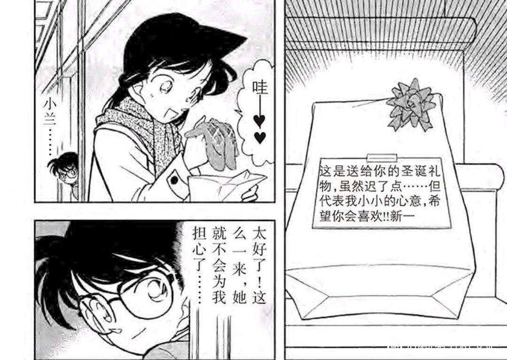
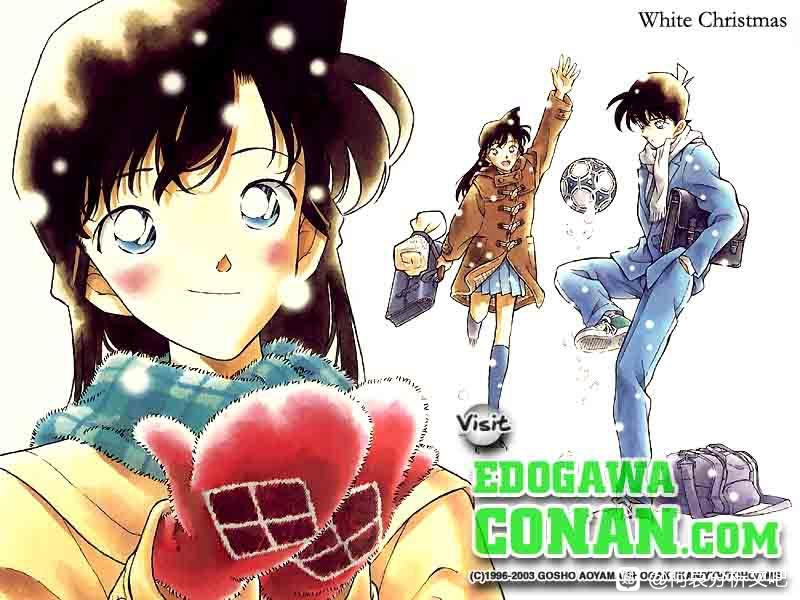

这篇分析的逻辑不够严谨，仅做发散思维考虑，很可能不对，因此不放在我折叠时空正文里。
红黑篇的【手套】意象出现了两次，而且这两次共性非常高。
第一次：漫画497【佛灭日出现的恶灵】，凶手拥有双胞胎，其中弟弟小时候救下女仆导致手受伤，从此带手套随时和哥哥互换身份，【女仆记错了救下她的人，表面以为是哥哥但潜意识里还是记住了正确的人（弟弟）】
第二次：漫画587【来自黄泉的杀人事件】，被害人拥有弟弟，【长得一模一样】，其中哥哥被杀，哥哥的手套是女友送的礼物，为了复仇，凶手将两只手套留在两个案发现场。
这两案都出现了显著的时间点，【佛灭日】可以追溯到13年前，恰好为新兰初遇和推测的新志初遇时间，【残杀案】可以追溯到10年前，即工藤新一少年冒险和推测的佑兰初遇时间。
【佛灭日】关键在于“记错人”，手套是隐瞒，【残杀案】关键在于“礼物”，手套是情意。
小兰对手套有偏好，见于漫画376【琉璃案】（TV版为“看不见的嫌犯”），小兰明确表示，喜欢【黑色的手套】，而父母都喜欢灰色，小兰对黑色手套的偏好，有可能来源于佑兰初遇，瑛佑一家有CIA背景，有可能使用黑色手套。
柯南送给小兰的手套（漫画48）似乎没有说明颜色，但肯定不是黑色。动画中为红色，红色是志保最喜欢的颜色（来自琴酒认证）
如果新志初遇和佑兰初遇同时为真，则柯兰对手套的偏好可以对应志保和瑛佑。
再看这两个手套案的标题。
【佛灭日】：
十三年前的噩梦-苏醒的恶魔-
被遗漏之处-第十三年的冲击
【残杀案】：
召唤死亡的手套-来自黄泉的杀人者-悲哀的手套
目前，柯南仅送过小兰手套，且颜色并非小兰喜欢。
红黑篇的【手套】意象出现了两次，而且这两次共性非常高。
第一次：漫画497【佛灭日出现的恶灵】，凶手拥有双胞胎，其中弟弟小时候救下女仆导致手受伤，从此带手套随时和哥哥互换身份，【女仆记错了救下她的人，表面以为是哥哥但潜意识里还是记住了正确的人（弟弟）】
第二次：漫画587【来自黄泉的杀人事件】，被害人拥有弟弟，【长得一模一样】，其中哥哥被杀，哥哥的手套是女友送的礼物，为了复仇，凶手将两只手套留在两个案发现场。
这两案都出现了显著的时间点，【佛灭日】可以追溯到13年前，恰好为新兰初遇和推测的新志初遇时间，【残杀案】可以追溯到10年前，即工藤新一少年冒险和推测的佑兰初遇时间。
【佛灭日】关键在于“记错人”，手套是隐瞒，【残杀案】关键在于“礼物”，手套是情意。
小兰对手套有偏好，见于漫画376【琉璃案】（TV版为“看不见的嫌犯”），小兰明确表示，喜欢【黑色的手套】，而父母都喜欢灰色，小兰对黑色手套的偏好，有可能来源于佑兰初遇，瑛佑一家有CIA背景，有可能使用黑色手套。
柯南送给小兰的手套（漫画48）似乎没有说明颜色，但肯定不是黑色。动画中为红色，红色是志保最喜欢的颜色（来自琴酒认证）
如果新志初遇和佑兰初遇同时为真，则柯兰对手套的偏好可以对应志保和瑛佑。
再看这两个手套案的标题。
【佛灭日】：
十三年前的噩梦-苏醒的恶魔-
被遗漏之处-第十三年的冲击
【残杀案】：
召唤死亡的手套-来自黄泉的杀人者-悲哀的手套
目前，柯南仅送过小兰手套，且颜色并非小兰喜欢。





太前期的真得谨慎一点，比如手机是兰提了一嘴手机真好，柯南给买的。但是在后续水族馆章节则完全补丁掉了。
但圣诞节搞不好不能豁免，圣诞节对于小哀来说，必然是个重要节日，这个意象可能真会用上。
漫画多次提起圣诞节快到了，我预测是1176话出圣诞节篇。因为红修篇是1000话，那么哀登场是176话，哀自己的1000话可能会有特殊意义。
但圣诞节搞不好不能豁免，圣诞节对于小哀来说，必然是个重要节日，这个意象可能真会用上。
漫画多次提起圣诞节快到了，我预测是1176话出圣诞节篇。因为红修篇是1000话，那么哀登场是176话，哀自己的1000话可能会有特殊意义。
2024-05-16 02:37 | 🌐之徙:此时魔术师的【圣诞树魔术】已经出现（柯南平次的推理魔术），我个人是认为初遇论至少要追溯到这里的。2024-05-16 02:40 | 世界上没有真理:也有人推測是1144話2024-05-16 02:43 | 其它各种:回复 世界上没有真理 :算算日子，6月复更，还真能赶上今年圣诞节，难不成老贼在憋个大的。

这是1999年11-12月的月历图，这套图的配色应该是青山定的

2024-05-16 03:12 | 🌐之徙:看来确实是红色的，感谢补充。
想要黑色，红黑对决的黑。就有种不祥的预感。
圣诞送手套只可能是红色或者白色吧 看看节日氛围啊
看看节日氛围啊
看看节日氛围啊2024-05-17 13:39 | Orange毛儿七:新一送的时候不是圣诞节，漫画中没有表现，只是看见毛利兰在自家门口冻久了，临时去买的。也请了解清楚再发言。2024-05-17 14:03 | 平者深黑:整个漫画就是圣诞氛围，只是没说是圣诞当天而已。从开头的圣诞促销标语和圣诞树到《红鼻子驯鹿》都是在表现圣诞节氛围，vol5file8柯南也直接说了这是圣诞节歌曲。礼物的包装上也写了“这是圣诞节礼物”。圣诞节礼物确实红色最多啊2024-05-17 14:08 | 平者深黑:回复 Orange毛儿七 :圣诞礼物，是不是圣诞节当天送的，跟它配色是什么样的有关系吗？开头的圣诞促销标语也是表明了这时候商店在卖圣诞节的那些东西吧2024-05-17 14:11 | Orange毛儿七:回复 平者深黑 :兰本来就喜欢红色的设定，但是后面选手套却要选黑色的本来就很可疑呀。不过你确实让我感受到了工藤新一送礼物的不用心，我还以为他是挑兰兰喜欢的颜色呢，结果只是刚好卖红色的而已。2024-05-17 14:44 | 平者深黑:漫画是1994年12月的。毛利兰喜欢红色是因为M1的红蓝线梗，青山得知要做M1的消息是1996年的事，所以在1996年之前大概是没有毛利兰喜欢红色这个设定的。不过那张彩图是1999年的，我也不知道1994年有没有设定好那副手套的颜色2024-05-18 03:05 | 三三喝菠萝水☔:回复 Orange毛儿七 :我觉得兰解喜欢红色这个设定没有沿用，因为她没有在漫画call back这个设定，平时各种原画也没有爱穿红色，30周年礼裙是蓝色。最最重要，她的名字是“兰”，兰花除了最近年的培育，很少会给人红色这种印象。2024-05-18 07:04 | Orange毛儿七:回复 三三喝菠萝水☔ :就是毛利兰并不是真的喜欢红色，因为灰原哀后面喜欢绯红色，不清楚这两个是不是同一个颜色。这也是特别有意思的呀，按天使的颜色，青山干嘛不让她选白色手套？漫画里都是红和黑，黑和白，灰和黑。
前排插眼。
漫画里手套出现的次数并不少。仅以红黑篇（VOL.48-VOL.60）为例，佛灭日的恶灵、侦探团的特别采访、虚假的婚礼、黑衣组织之影、坚不可摧的雪人、红与黑血缘、红与黑决死、卡拉OK的死角，都提及到了手套。如果只找出其中两个案件是和初遇、错位有关系的，两个之间关联度好像还不够强。
2024-05-17 22:35 | 🌐之徙:这两个手套案件的核心在于都出现了【长的一模一样的人】2024-05-17 22:36 | 🌐之徙:而且其他很多场景，手套都不关键，例如雪人案手套就是堆雪人用的，婚礼手套也是需要用的。 但这两个案件，手套都作为传递情意的道具被仔细描写。2024-05-19 02:58 | 笑面hwh:回复 🌐之徙 :纽约篇也有手套，翻过来的手套，这个会不会也沾点边？
总觉得是诱饵，我小时候看过黄泉杀人事件的动画，对这个杀人手法印象深刻，十分喜欢。最近又把佛灭日的漫画看了(动画也是小时候看的，也记得凶手)再往后看黄泉杀人的漫画发现了一点。
我把这两个案件混淆了，记错了凶手
我把这两个案件混淆了，记错了凶手